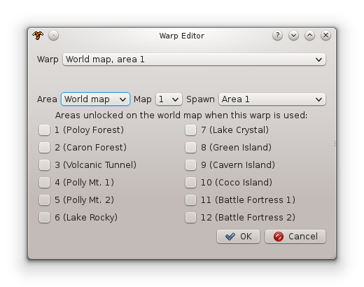

After choosing your ROM, the editor proper will launch. There are three basic components of the program that are displayed at all times:
- The menu bar. The menu bar provides access to essential program functions like saving, loading, and changing tools. It contains several submenus, each with their own set of options.
- The tool selection sidebar. This bar provides quick access to each of the editing tools, represented by a small icon.
- The current editing tool. This allows some aspect of the game to be edited.
Menu Bar
The menu bar contains several submenus for manipulating the program.
- File: This is the most fundamentally important component of the program. The File menu allows projects to be saved and loaded to a project file, or exported to a playable ROM image. A project file (extension: .tls) contains the data Tales needs to make edits—it is not a playable game. Project files are used to store data between program sessions. To produce a playable game, the project data must be exported to a ROM image (extension: .gg). The File menu contains the following items:
- Open project... (Ctrl+O): Opens an existing project file.
- Save project (Ctrl+S): Saves the current project to the file it was last saved or loaded from. If the project has not yet been saved or loaded, this functions identically to the Save As option.
- Save as... (Ctrl+Shift+S): Opens a dialog box for selecting a location to save the current project.
- Export ROM (Ctrl+E): Exports the project as a playable ROM image to the location it was most recently exported to. If the project has not yet been exported, this functions identically to the Export ROM As option.
- Export ROM as... (Ctrl+Shift+E): Opens a dialog box for selecting a location to export the current project as a playable ROM.
- Export resources...: Opens the Export Resources dialog.
- Tools: contains a list of editing tools that can be selected for use. The currently selected tool is indicated by a check mark next to its name. Identical in function to the tool selection sidebar—see that section for details.
- Help: contains the About option, which displays program authorship and version information.
Tool Selection Sidebar
The tool selection sidebar is a series of graphical icons that provide quick access to the program's editing tools.
- Level editor (Shift+L)
- VRAM editor (Shift+V)
- Graphics editor (Shift+G)
- Tilemap editor (Shift+T)
- Palette editor (Shift+P)
- Palette cycle editor (Shift+Y)
 Metatile structure editor (Shift+S)
Metatile structure editor (Shift+S)- Metatile behavior editor (Shift+B)
 Width/height map editor (Shift+M)
Width/height map editor (Shift+M)- Music editor (Shift+U)
- Power-Up editor (Shift+R)
- Hacks and enhancements editor (Shift+H)
Current Editing Tool
Most of the program window is comprised of the current editing tool. Each tool has its own interface. These are described in detail in the following section.
How a Level Works
Conceptually, each level of Tails Adventures has three parts: the metatile layout, the object layout, and the spawn layout. The metatile layout determines how the "static", unchanging parts of the level look and behave. The object layouts determines where objects appear in the level. The spawn layout determines the starting positions of Tails and the camera within the level.
The basic building block of a level is the metatile. A metatile is a 16x16 pixel block built out of four 8x8 tiles. The game defines 256 metatiles that can be placed in any level. Each of the 256 metatiles behaves the same no matter which level it is placed in—only the appearance may change, depending on the level's VRAM and metatile structure definitions. Each metatile has several properties that determine its exact function—see Metatile Behavior Primer for more details.
Each level also contains up to 64 objects. Each object defined in a level has several properties:
- a type that determines how it behaves
- an X/Y spawn position where the object should initially appear
- several global flags for various settings, such as which direction the object is facing and whether or not it is visible
- two VRAM indices that determine the object's appearance when facing left and right
- an initial state, whose exact meaning depends on the object's type
It is important to note that due to space restrictions, there is an absolute upper limit of 1645 objects total across all levels.
The game needs to know where to place Tails in a level when it starts, so every standard level has one or more Tails spawn points. These spawn points consist of two X/Y positions: one for Tails, and one for the game's camera. The number of spawn points for a level is fixed; most have at least two. Spawn points are numbered sequentially. When an area is accessed from the world map, Tails appears at the first spawn point in the first map of the target area.
To create connections from one level to another, each level has a fixed number of warp definitions. Each level in the game is identified by two numbers: an area and a map. A warp definition specifies the area and map number of the target level, as well as a spawn index number indicating which of that level's spawn points Tails should start at when the warp is accessed. Each warp also contains 12 unlock flags, each corresponding to a location on the world map. When the warp is used, any area whose unlock flag is set will be unlocked for access on the world map. Warps are triggered using warp objects, described later.
Levels also contain a number of miscellaneous properties:
- A size. There are a fixed number of valid level width/height pairs.
- A metatile structure set. This determines how the level's graphics, loaded in VRAM, are put together to form the look of each metatile.
- Two palette indices identifying which of the game's palettes shoult be loaded. Palette 1 is used only for coloring the level, while Palette 2 can be used for coloring both level and object graphics (though the standard game uses it only for objects).
- Up to four effects. Effects can do anything, but generally they cycle some of the colors in the palette or change some of the level's graphics.
Editing Tools
Level Editor
The level editor is the meat of the program, and the most complex component by far. It allows virtually all aspects of level layout to be customized, as well as spects of the game flow like connections between levels.
Level Editor Components
The level editor consists of a few different parts, as labelled on the image above:
- The level preview area. This is an interactive display of the currently selected level. Its appearance varies based on the chosen display mode and active overlays, but generally it shows the layout of the current level, its objects and spawn points, and the boundaries of the camera. The scroll bars at the bottom and right of the preview allow it to be scrolled to view different parts of the level. The editing tools described below are used by interacting with this part of the screen.
Shortcuts:
- Mouse wheel up/down: scroll display vertically
- Shift+Mouse wheel up/down: scroll display horizontally
- Ctrl+either of the above: scroll display faster
- The level editing tool menu. The buttons in this menu switch the active tool for the level preview area.
- Metatile pencil tool (shortcut: P). When this tool is active:
- left-click on the level preview area to replace the clicked metatile with the one currently selected in the metatile picker
- right-click on a metatile in the level preview area to "pick up" that metatile as the current type to draw.
- Hold Ctrl and drag the mouse with the left button held to switch to the area clone tool.
- Area clone tool (shortcut: L). When this tool is active:
- If a source area has not yet been selected, hold the left button and drag the mouse on the level preview area to select a rectangular area of metatiles to clone.
- Once a source area has been selected (indicated by a preview area outlined in red), left-click on the level preview area to clone the source area to the target area.
- If a source area is already selected, a new source area can be defined by holding Ctrl and dragging the mouse with the left button held.
- At any time, right-click to switch to the metatile pencil tool with the metatile under the mouse "picked up" as the active metatile.
- Object editing tool (shortcut: O). When this tool is active:
- Left-click an object in the preview area to select it.
- Left-click and drag an object in the preview area to move it.
- Hold Ctrl and drag an object in the preview area to clone it.
- Middle-click an object in the preview area to delete it.
- Double-click an object in the preview area to open the Object Properties Dialog.
- Left-click and drag an empty part of the preview area to select multiple objects at once in a rectangular area.
- With multiple objects selected, left-click and drag any of the selected objects to move all of them at once, maintaining their relative layout.
- Perform any action from the spawn editing tool to switch to the spawn editing tool.
- Spawn editing tool (shortcut: K). When this tool is active:
- Left-click a spawn point to select it.
- Left-click and drag a spawn point in the preview area to move it.
- Double-click a spawn point in the preview area to open the Spawn Properties Dialog.
- Perform any action from the object editing tool to switch to the object editing tool.
- The Warps... button opens the Warp Editor Dialog.
- The Level properties... button opens the Level Properties Dialog.
- The metatile picker. This displays the metatiles for the current level. Left-clicking on a metatile selects it as the current tile for the Pencil tool (switching to the Pencil tool if it is not already in use).
- The object list. This lists the names and initial states of all of the objects in the current level. Left-click on an object's entry in the list to select it and scroll the preview area to its current location. Double-click on the entry to open its Object Properties Dialog. The Add... button opens the Add Object Dialog. The Remove button removes the currently selected object. The Autofill all button attempts to automatically correct the VRAM indices of all objects in the level, which is useful after rearranging a level's VRAM in the VRAM Editor. Finally, the text label below the list shows how many object slots out of the maximum are currently in use. If the maximum limit is reached, no more objects may be placed.
- The display settings. The settings in this area control what information is displayed in the preview area and metatile picker.
- Grid: turns the metatile grid overlay on and off.
- Zoom: zooms the preview display in and out. Zoom levels range from 25% to 400%.
- Metatile display options: changes how metatiles are displayed.
- Visual: metatiles are displayed as they will appear in-game.
- Behavior: metatiles are displayed as icons representing their function in the level.
- Vert. solidity: each metatile's height map is displayed. Fully solid tiles appear black; tiles that are solid on top appear gray. If a tile has a nonzero height map but is marked as nonsolid, it will appear in very light gray.
- Horiz. solidity: same as the Vert. solidity option, but for width maps.
- Layer display options: changes which "layers" of the preview are drawn.
- BG: toggles whether tiles with background priority are displayed.
- FG: toggles whether tiles with foreground priority are displayed.
- Objects: toggles whether objects are displayed.
- Spawns: toggles whether Tails spawn points are displayed.
- The camera boundaries editor. The four numbers listed indicate where scrolling will be halted in each direction. Note that coordinates are given as distances from the left side of the screen (for left/right bounds), or the top side of the screen (for top/bottom bounds). There is also a "dead area" at the top and left of each area that the game is not capable of displaying (this is a technical issue related to the size of the Game Gear's screen). The Show box toggles whether or not the camera boundaries are displayed in the preview.
- The map selector. The game's maps are listed here, sorted by area. Left-click on a map's entry to open it for editing.
Note: Some maps have hardcoded "alternate" layouts that are loaded in place of the "regular" layout under certain circumstances. These maps share their object layout with the "parent" map, but are otherwise unique (i.e. they have their own properties and metatile layout). Such levels are marked as "Special" in this list, with their "parent" map listed in parentheses.
There are also two non-tool buttons in this area:
Object Properties Dialog
The Object Properties Dialog is accessed by double-clicking on either an object's preview in the preview area, or its entry in the object list. It allows the object's properties to be modified.
- Object type: the object's base type, which determines its behavior.
- X/Y-coordinate: the object's starting position. Note that the point at which the object actually spawns (and despawns) is type-dependent.
- Facing flag: Theoretically, this sets which direction the object initially faces, left or right. In practice, all but perhaps two or three object types ignore this flag and instead set the direction manually in their initialization code depending on their initial state.
- Invisible flag: If set, the object will be invisible when spawned. This flag will not work if either it or the flashing flag is changed by the object's cpde.
- Flashing flag: If set, the object will flash (flicker on and off at 30 Hz) when spawned. This is implemented by repeatedly switching the invisible flag on and off, and hence will "override" it if both are set. Object may also manually override this setting in their code.
- VRAM indices: Each object has two VRAM indices, one for its left-facing graphics and one for its right-facing graphics. If the current level's VRAM does not contain the expected graphics at the listed indices, then the object's graphics will obviously not display correctly. To save you some headaches, the program tries to fill in these values automatically whenever an object's type is changed by scanning VRAM for the expected graphics. This rescanning process can also be triggered manually by clicking the Autofill button (see also the Autofill all button, found in the object list).
- Spawn parameter: a parameter that determines the object's initial configuration. For the vast majority of objects, this simply involves choosing an initial state from a list. There are exceptions, however:
- Warp objects (object type 8):
- Warp destination: chooses which of the level's warp definitions (see Warp Editor Dialog) is the target of the warp object.
- Warp size: determines the size of the warp. Warp size varies by orientation—vertical warps extend upward by the listed amount, while horizontal warps extend both left and right.
- Orientation: determines whether the warp is horizontal or vertical. Horizontal warps are always 16 pixels (one metatile) high, while vertical warps are always 16 pixels wide.
- Underwater mine hazards (object type 65):
- State: selects whether the mine is an immobile hazard (1 damage), a dropped mine (5 damage), or a mine dropper.
- Orientation: If the mine is a mine dropper, then it may cover multiple metatiles in order to cram more stuff on the screen at once. Droppers may be lined up either horizontally or diagonally.
- Metatile coverage: determines how many metatiles the dropper extends from its origin. The maximum value is 15.
- Underwater missile launchers (object type 66):
- Orientation: as with mine droppers, but missile launchers must be vertical instead of horizontal.
- Metatile coverage: same as mine dropper.
- Electric barriers (object type 75) and electric barrier switches (object type 76):
- Identifier: When an electric barrier siwtch is pressed, it attempts to deactivate the electric barrier whose identifier matches its own. Thus, this value is used to pair switches and barriers together.
- Warp objects (object type 8):
Spawn Properties Dialog
The Spawn Properties Dialog is accessed by double-clicking on a spawn point (Tails graphic) in the preview display. Like the Object Properties Dialog, it allows the spawn's position to be manually modified. It also allows the camera's starting position to be changed. For convenience, the camera position is expressed as an offset from Tails' position.
Warp Editor Dialog
The Warp Editor Dialog is accessed by clicking the Warps... button. The Warp combo box allows each of the defined warps for the current level to be selected for editing. The Area, Map, and Spawn boxes set the warp's destination. The Area Unlock Flags determine which areas on the world map are unlocked when the warp is used.
There are a couple of special cases hardcoded into the game. First, if a warp's area is set to "World map", then the "Spawn" parameter determines which area the Tails icon is set to when the warp is used. Second, warps to the world map can have a spawn parameter of "Coco Island escape". In this case, the Coco Island escape cutscene sequence will trigger when the warp is taken.
Level Properties Dialog
The Level Properties Dialog is accessed by clicking the Level Properties... button. It sets a number of miscellaneous level properties:
- Size: determines the width and height of the level, in metatiles. Only certain specific sizes are allowed by the game engine.
- Effects: Each level may have up to four effects. An "effect" is generally a cycling palette or graphic.
- Metatile structure set: Changes the level's metatile structure set, and thus the appearance of its metatiles.
- Palette 1 and 2: Changes the level's tile palette (palette 1) and object palette (palette 2).
VRAM Editor
The VRAM editor is probably the second most important part of the program after the level editor. It can rearrange and alter the contents of VRAM, allowing objects to be placed in levels they weren't originally meant to be in. It also handles some miscellaneous editing tasks related to the locations of certain graphics in VRAM, such the as leaf graphic used for wind gust effects.
VRAM Primer
On the Master System and Game Gear, VRAM consists of up to 512 pattern (tile) definitions, which constitute the graphics the system can display. Of those, 64 patterns' worth of space must be used to store graphics metadata; Tails Adventures always uses the last 64 patterns for this purpose. This leaves 448 free patterns at the start of VRAM.
Tails Adventures devotes the first 256 patterns to object graphics, and the remaining 192 to level graphics. All of the graphics for a level are stored as one big graphic. To save space, however, object graphics are broken up into small pieces, and each level loads whatever it needs to display its objects. This offers us some freedom to shuffle object VRAM around so we can put different objects in levels, which is the main purpose of the VRAM editor.
An important limitation of the SMS/GG video hardware is that it cannot flip sprites. Since objects are rendered using sprites, objects that can face left or right—as most objects in the game can—must have horizontally flipped versions of their graphics loaded to VRAM. Tails Adventures therefore has some special handling for flipped versions of graphics, as we will see.
Tails Adventures does not actually define a unique object VRAM layout for each level; instead, it has a number of object graphic "packs" or "groups" that it recycles where it can. Fortunately, this limitation is not terribly relevant because Tales can insert new packs alongside the originals.
VRAM Editor Components
- VRAM Preview: The main component of the VRAM editor, this interactive display previews the contents of VRAM in the currently selected level. Each of the graphics to be loaded is displayed in its target position. Left-clicking on an object graphic highlights it in both the preview and the object graphic list. To move a graphic to a new location in VRAM, click and drag it to a different place. Additionally, the selected graphics for the leaf, smoke puff, and water splash graphics will be shown here if their corresponding displays are enabled (see below).
- Selected Graphic Info: displays information about the currently highlighted graphic in the VRAM preview. The Index box shows the raw VRAM index of the graphic and allows it to be manually changed to a new value. The Select button provides an alternate method of moving the graphic: click the button, then click the location in the VRAM preview where the graphic should go. The Flipped check box indicates whether the selected graphic is horizontally flipped or not.
- Object Graphic List: lists the current level's object graphic pack and all of its contained graphics, by name. Left-clicking an object graphic's name highlights it in both the list and the VRAM preview. The Up Arrow and Down Arrow buttons move the currently selected graphic up or down the list, changing its priority (graphics lower on the list will be overwritten by those higher on the list). The graphic pack box allows the graphic pack used for the level to be changed. The Edit... button opens the Object Headers Dialog, where new graphic packs can be created and removed. Finally, the Add... button brings up the Add Graphic Dialog, while the Remove button removes the currently selected graphic from the pack.
- Other Settings: allows non-object aspects of VRAM to be modified.
- Map graphic box: allows the map graphic for the current level to be changed. There is only one map graphic allowed per level, so generally this needs to be one of the game's provided level graphics.
- Leaf index box: Tails Adventures defines a "leaf index" for each area of the game. When the game wants to generate a wind gust effect, it looks up the leaf index for the current area and uses the patterns at that location to draw the effect. This allows space for other graphics to be optimally assigned, and is also used to composite two different graphics for the "fire wind" effect in Polly Mt. 2. This box allows the leaf index to be changed. To make this easier, the Select button, when clicked, allows the new location to be chosen by clicking on the VRAM preview.
Note: The leaf index is shared among all maps in an area. It can't be separately set for each map. Also note that the leaf index for Polly Mt. 1's boss arena (area 4-3) is hardcoded to index 250 and cannot be changed.
- Smoke puff index box: Nearly identical in function to the leaf index box, this one specifies the location of the graphics for the smoke puff emitted from the Sea Fox when it fires a weapon. However, this index is not shared among maps in an area; each map has its own index.
- Water splash index box: Same as the smoke puff index, including unique definitions per map, for the splash effect that appears when Tails or the Sea Fox jumps in/out of the water.
- Map selector: allows the current level to be changed. Click any map entry to select it.
Object Headers Dialog
The Object Headers Dialog allows new object graphic packs to be added and removed from the game. The Add button adds a new, empty pack to the end of the list, while the Remove button removes the currently highlighted pack. After confirming the changes with OK, any newly added packs can be populated by assigning the pack to a new level and changing it as needed.
Add Graphic Dialog
The Add Graphic Dialog allows a new graphic to be added to an object graphic pack. The graphic list on the right lists all the graphics that can be added to VRAM by name, sorted by category and then alphabetically. The graphic preview on the left shows the selected graphic and the number of tiles in VRAM it will occupy. The flip options at the bottom select whether to add the graphic as-is, flipped, or both (as two graphics, one for each direction).
Graphics and Collision Editor
The graphics editor provides rudimentary but functional editing of all the graphics in Tails Adventures, both compressed and uncompressed, as well as the ability to diplay and modify object collision boxes.
Graphics Primer
On the Master System and Game Gear, raw graphics consist of a series of patterns of pixel data. Each pattern can be combined with one of two 16-color palettes to form a color image. Patterns can be stored in the ROM either compressed or uncompressed; graphics stored uncompressed can be loaded quickly, which makes them suitable for player character graphics (which are too numerous to all fit in VRAM at once, and so are loaded one at a time as needed).
Tails Adventures combines raw graphic patterns together to produce the "object graphics" that are displayed to the player using sprites. The way the patterns are assembled is referred to as a sprite mapping. Sprites have a transparent color, which is always the first (zeroth) color in the palette. The game also assigns every sprite mapping a collision box, so that an object that uses a mapping can tell when it has touched another object.
Tales does not support editing of sprite mappings for technical reasons (i.e. it's more trouble than it's worth). However, it can edit graphics and collision boxes.
Graphics Editor Components
- Graphic preview: Displays the raw patterns that compose the selected graphic. The graphic combo box at the top allows the selected graphic to be changed. This area can be interacted with to edit the graphics using the tools described below.
- Sprite mapping preview: Displays the currently selected sprite mapping, if any, for the active graphic. The mapping combo box at the top allows the selected mapping to be changed. Not all graphics have mappings. For those that do, this area can be interacted with to edit the graphic, just like the graphic preview area.
- Graphic editing tools: The basic tools for editing.
- Preview palette: shows the palette being used to edit the graphic. Graphics can be colored using more than one palette, so the colors displayed are just for editing purposes. Clicking on a color selects it as the current color for the Pencil tool.
- Preview palette box: allows the preview palette for the current graphic to be changed. If changed, the new value will be saved as the default used whenever the graphic is loaded for editing.
- Toolbar: currently consists of just a single tool, the Pencil.
- Pencil: a simple tool for drawing one pixel at a time.
- Left-click: draw the selected color to the clicked pixel. Either the graphic preview or the sprite mapping preview can be clicked.
- Right-click: set the clicked pixel to color 0 (sprite transparency). Essentially an "eraser".
- Ctrl+left-click: "pick up" the clicked pixel as the current color. Equivalent to the "dropper" tool in many image editing programs.
- Pencil: a simple tool for drawing one pixel at a time.
- Zoom box: changes the current zoom level. Ranges from 100% to 1600%.
- Transparency check box: sets whether sprite transparency is enabled or disabled. If enabled, transparency pixels are displayed as white.
- Grid check box: sets whether an 8x8 tile grid is overlaid onto the editing preview(s).
- Collision editor: allows the current sprite mapping's collision box to be edited. The Width and Height boxes allow the box's width and height to be changed. The X-offset and Y-offset boxes change the offset of the graphic itself from its associated object's centerpoint; thus, changing their values may not yield the results you'd intuitively expect. The Collision check box sets whether or not the collision box is overlayed onto the sprite mapping.
Tilemap Editor
The tilemap editor can modify the layout of the game's fixed-position tilemaps, such as the title screen and world map.
Tilemap Primer
In Tails Adventures, a tilemap is a rectangular area composed of 8x8 tiles. For details about how tiles work, see the Metatile Structure Primer. Suffice it to say that a tilemap specifies the type and layout of patterns from a particular graphic. Due to the nature of the game, the graphic associated with a tilemap is more or less hardcoded, and Tales does not allow it to be changed.
There are two tilemap formats in Tails Adventures: 2-byte-per-tile (2bpt) and 1-byte-per-tile (1bpt). 2bpt tilemaps store full tile information for every pattern in the tilemap. 1bpt tilemaps store only the low byte of the data and use a hardcoded value for the upper, which in practical terms means that (a.) only half the patterns in VRAM can be used in the tilemap, usually hardcoded to the lower 256 patterns; and (b.) only the pattern number of the tile can be modified, not the priority or other settings. The vast majority of tilemaps are 2bpt, with notable exceptions including the title screen and the credits text.
Tilemap Components

- Tilemap selector: allows different tilemaps to be selected for editing.
- Tilemap preview: an interactive display that allows the tilemap to be modified. Tools and controls are explained below under Editing tools.
- Tile selector: an interactive display showing the tiles in the graphic associated with the tilemap. Generally, this indicates the "active" metatile for each tool, and allows different ones to be selected as "active".
- Editing tools: allows different tools to be selected for editing the tilemap.
- Pencil (shortcut: P): "draws" on top of the tilemap.
- Left-clicking on the tilemap preview overwrites the clicked tile with the active tile.
- Left-clicking on the tile selector selects the clicked tile as the active tile.
- Right-clicking on the tilemap preview flips the active tile horizontally when it is placed in the tilemap preview.
- Middle-clicking on the tilemap preview flips the active tile vertically when it is placed in the tilemap preview.
- Holding Shift and clicking on the tilemap preview selects the clicked tile as the active tile.
- Holding Control and clicking on the tilemap preview switches to the Area Clone tool.
- Area clone (shortcut: L): allows a rectangular portion of the tilemap to be coped to another area.
- Left-clicking and dragging on the tilemap preview with nothing selected selects an area for copying.
- Left-clicking after selecting something copies the selected area to the clicked area.
- With an area selected, holding Control, left-clicking, and dragging selects a new area for copying.
- Holding Shift and clicking on a tile switches to the Pencil tool and selects the clicked tile as the active tile.
- Left-clicking on the tile selector switches to the Pencil tool and selects the clicked tile as the active tile.
- Details editor (shortcut: K): allows details of each tile to be changed.
- Left-clicking on the tilemap preview selects the clicked tile as the active tile.
- Interacting with the detailed tile editor below the toolbar changes the properties of the active tile. Note that all functions of this editor exception the Tile box are disabled for 1bpt tilemaps.
- Left-clicking on the tile selector changes the pattern associated with the active tile.
- Right-clicking on the tilemap preview flips the clicked tile horizontally.
- Middle-clicking on the tilemap preview flips the clicked tile vertically.
- Grid check box: enables and disables the tilemap grid overlay.
- Pencil (shortcut: P): "draws" on top of the tilemap.
Palette Editor
The palette editor can change the colors in the game's various color palettes.Palette Editor Components

The palette editor is very simple. The palette combo box at the top selects the palette to be edited. The palette preview displays the chosen palette. Clicking on a color in the preview selects it as the active editing color. The active color can be edited using the color sliders representing the red, green, and blue components of the color.
Palette Cycle Editor
The palette cycle editor can change the colors in the game's various cycling palettes, which repeatedly change colors to create the illusion of motion.Palette Cycle Editor Components
The palette cycle editor is virtually identical in format to the palette editor except for the new State combo box, which can be used to select each of the palette states in the cycle for editing. Any colors not used in the cycle are marked as disabled in the palette preview and cannot be edited.
Metatile Structure Editor
The metatile structure editor can modify the appearance of the game's metatiles by redefining which tiles are used to draw them.
Metatile Structure Primer
Each 16x16 metatile consists of four adjacent 8x8 tiles. A tile is a pattern in VRAM that is used as part of the SMS/GG's nametable—essentially, a "background" graphic. The SMS/GG hardware is capable of performing certain manipulation to tiles "on the fly":
- A tile may be flipped horizontally, vertically, or both at once.
- A tile may be colored using either one of the two color palettes.
- A tile has an associated priority. If a tile has background (BG) priority, sprites will be drawn in front of it. If a tile has foreground (FG) priority, sprites that overlap the tile will be drawn behind it, except if some of the overlapping pixels in the tile are set to color index 0. In that case, the overlapping color 0 pixels will still appear behind the sprite.
Tails Adventures defines a number of metatile structure sets, each defining the tile layouts for a set of 256 metatiles. Each metatile structure consists of four tile definitions, each giving the appearance (pattern index, priority, etc.) of a tile in the metatile. Every level is associated with a metatile structure set used to draw its metatiles. Typically, levels with the same appearance share the same set.
Metatile Structure Editor Components
- Metatile picker: displays the metatile structures in the current set. Left-clicking a metatile in this area selects it for editing.
- Tile picker: displays the patterns in the current preview graphic, with the pattern used for the selected tile in the active metatile highlighted. Left-clicking a pattern in this area changes the selected tile to use the new pattern.
- Structure editor:
- Metatile preview: shows an editable preview of the structure of the currently selected metatile. The four tile editors allow each of the structure's component tiles to be modified.
- Left-clicking on a tile in the preview selects it as the active tile, allowing its VRAM index to be changed using the tile picker.
- Right-clicking on a tile toggles its horizontal flip flag.
- Middle-clicking on a tile toggles its vertical flip flag.
- Tile structure box allows a different structure to be picked for the current metatile.
- Add and Remove buttons: add a new structure layout and remove the current one, respectively. There must be between 1 and 256 (inclusive) structure definitions per set.
- Metatile preview: shows an editable preview of the structure of the currently selected metatile. The four tile editors allow each of the structure's component tiles to be modified.
- Settings:
- Grid check box: toggles the metatile and tile grids on and off.
- Set box: allows the target set to be changed. Changing sets automatically loads the default preview graphic and palettes associated with that set.
- Preview graphic box: changes the graphic used to display the current structure set. As a set can be associated with more than one set of graphics, determined by each level's VRAM configuration, this setting is for editing purposes only—it has no effect on the game if changed. If the preview graphic is changed, the new selection is saved as the default.
- Preview palette boxes: change the palettes used to display the current structure set. The same caveats as above apply.
Metatile Behavior Editor
The metatile behavior editor allows several aspects of metatiles' behavior to be altered.
Metatile Behavior Primer
As previously discussed, the game defines 256 metatiles which have the same behavior throughout all the game's levels. Specifically, every metatile has a solidity setting, behavior property, width map, height map, and slope speed value.
- Solidity: defines whether the metatile is fully solid, solid on top, or nonsolid. If a metatile is fully solid, its width and height map determine when objects are colliding with it. If a metatile is solid on top, objects can pass through it from below but not from above. If a metatile is nonsolid, it can't be touched, but its width and height map must have only zero magnitudes or the metatile will not behave correctly.
- Behavior: defines the metatile's "effect", such as whether it can be destroyed with a bomb or damages Tails on contact. See the full list of behaviors below.
- Width/height map: defines which parts of the metatile are "solid" and which are "nonsolid". See the Width/Height Map Editor section for more details. Normally, a metatile's width and height map need to correspond to the same slope, or the metatile will behave erratically.
- Slope speed value: a signed value that is added to Tails' velocity when he tries to move while in contact with the metatile. This is used to make Tails walk slower when moving uphill. Note that Tails' velocity is modified before the speed cap is applied, so this cannot be used to make Tails move faster than normal—only slower. The game has a limited number of values for slope speed; each metatile must choose one of them.
Metatile Behavior Editor Components
- Metatile picker: displays the metatiles by behavior, vertical solidity, or horizontal solidity, according to the current settings. Left-clicking a metatile in this area selects it for editing.
- Display settings: changes how the metatiles in the metatile picker are previewed (by behavior, vertical solidity/height map, or horizontal solidity/width map). The Grid check box toggles the metatile grid on and off.
- Metatile editor: allows the current metatile's behavior to be changed. The radio buttons at the top set the solidity, while the combo boxes allow the slope speed, behavior, height map, and width map to be changed.
Metatile Behavior List
Behaviors listed in red have hardcoded behavior depending on what metatile index they are assigned to.
- 0. Null tile: The metatile is "nonsolid". However, this does not cause the width and height map to be ignored! If a metatile has the null tile behavior, its width and height maps must consist of all zeroes, or Tails will not be able to interact with it correctly.
- 1. Climbable 1: The metatile can, if solid, be climbed on by Tails if he comes in contact with the edge.
- 2.
 Climbable 2: The metatile can, if solid, be climbed on by Tails if he comes in contact with the edge. Appears to be functionally identical to Climbable 1, and is displayed as such in the editor.
Climbable 2: The metatile can, if solid, be climbed on by Tails if he comes in contact with the edge. Appears to be functionally identical to Climbable 1, and is displayed as such in the editor. - 3. Nonclimable: If solid, the metatile can be interacted with but not climbed on by Tails. This is ordinarily set on sloped tiles to prevent Tails from inappropriately attemping to climb on them.
- 4.
 Damaging: Touching the metatile causes 4 rings of damage to Tails.
Damaging: Touching the metatile causes 4 rings of damage to Tails.
This tile has hardcoded behavior for the following metatile indices:- 104, 105: upward spikes (damaging on top).
- 106, 107: downward spikes (damaging on bottom).
- 108, 109: rightward spikes (damaging on right).
- 110, 111: leftward spikes (damaging on left).
- 112, 113: lava (damaging on all sides).
- All other indices: no effect.
- 5. Instadeath: If Tails touches the metatile, he immediately dies, resulting in a game over. Note that this behavior is not set on any metatile in the base game.
- 6. Water: The metatile is considered Tails water.
This tile has hardcoded behavior for the following metatile indices:- 154: upward water current.
- 155: downward water current.
- 156: leftward water current.
- 157: rightward water current.
- All other indices: standard water (alters physics).
- 7. Wind gust: If Tails is flying and he comes in contact with the metatile, he will be forced to move in a particular direction until he stops flying or is no longer in contact with the metatile.
This tile has hardcoded behavior for the following metatile indices:- 120: upward wind gust.
- 121: downward wind gust.
- 122: leftward wind gust.
- 123: rightward wind gust.
- 124: up-left wind gust.
- 125: down-left wind gust.
- 126: down-right wind gust.
- 127: up-right wind gust.
- All other indices: no effect.
- 8. Always-left conveyor: A conveyor belt that always moves to the left.
- 9. Conveyor reverser: If the Wrench item is used in the proximity of the metatile, all conveyor metatiles (behavior 12) in the level will reverse direction.
This tile has hardcoded behavior for the following metatile indices:- 118: "Standard" reverser.
- 119: "Reversed" reverser.
- All other indices: no effect?
- 10. Crumbling: If Tails walks on top of the tile, it will disintegrate after a few moments.
- 11. Destructible: The metatile can be destroyed by various means.
This tile has hardcoded behavior for the following metatile indices:- 96, 97, 98: destroyable by standard weapons (Regular Bomb, Remote Bomb, Sonic...). If in the Sea Fox, the metatile can be destroyed by touching it with the front of the ship.
- 99, 100, 101: destroyable only by the Large Bomb.
- 158: destroyable by standard weapons, and spawns a ring when destroyed.
- All other indices: destroyable by standard weapons?
- 12.
 Standard conveyor: The metatile pushes Tails left or right.
Standard conveyor: The metatile pushes Tails left or right.
This tile has hardcoded behavior for the following metatile indices:- 116: pushes left if conveyor belts have not been reversed, and right if they have.
- 117: pushes right if conveyor belts have not been reversed, and left if they have.
- All other indices: no effect?
- 13. Dummy 1: no effect.
- 14. Destructible with napalm: The metatile can be destroyed by a Napalm Bomb.
- 15. One-way down tile: The metatile can be passed through from above, but not below.
- 16. Dummy 2: no effect.
- 17. Big upward gust: When touched by Tails, the metatile generates a "strong" wind gust that blows him upward by approximately 16 metatiles vertically (regardless of whether he is flying). Note that the controls are locked until Tails has moved the full distance required, so make sure the player can't get stuck by being blown into a ceiling.
- 18. Dummy 3: no effect.
Width/Height Map Editor
The width/height map editor can modify the game's metatile width and height maps. It also allows slope speed values to be changed.
Width/Height Map Primer
To detect when objects are touching the level, the game assigns every metatile a width map and a height map. Width and height maps—occasionally referred to generically as "length maps"—each consist of 16 magnitude values, one for each pixel in a metatile's width or height. The magnitude indicates how far the metatile extends horizontally or vertically at the given index. The width map is used to detect collision on the x-axis, while the height map is used to detect collision on the y-axis.
Width maps can extend either from the right side of the metatile toward the left ("forward"), or the left side toward the right ("backward"). Similarly, height maps can extend either from the top of the metatile toward the bottom ("forward"), or the bottom toward the top ("backward"). Normally, all values in a length map face the same direction, although this is not required.
Width/Height Map Editor Components
- Length map preview: an interactive display of the current length map. Left-clicking a row or column in the display sets the corresponding row or column in the map. Double-clicking or right-clicking a row or column in the display opens the Length Map Edit Dialog, allowing its value to be manually set. The All forward button makes all lengths face forward, while the All backward button makes them all face backward.
- Width/height map selector: lists all the width and height maps in the game. Clicking on a width or height map opens it for editing in the preview.
- Slope speed editor: lists all of the game's slope speed values and allows them to be modified. See the explanation of slope speed values in the Metatile Behavior Primer.
Width/Height Map Edit Dialog
The Width/Height Map Edit Dialog is accessed by double-clicking or right-clicking a row or columns in the length map preview. It allows the magnitude of the length map at the selected point to be modified, and also allows the direction of its growth to be set to forward or backward.
An interesting point of fact is that the magnitude can be set as high as 63, well outside the actual boundaries of a metatile. However, the game will only recognize that an object has contacted the map when it is actually touching the associated metatile, causing it to "jump" away once it gets too close. This can be useful for achieving certain effects.
Music Editor
The music editor allows the music that plays in each area of the game to be changed. It can also alter the tracks that play when the Radio item is used.
Music Editor Components
The music editor is very simple. On the left is the area music editor. Each area of the game has an associated music track that plays on all maps in that area (with one exception). The combo boxes allow the track for each area to be changed. On the right is the Radio music editor, which functions identically except that it changes the tracks that play when the Radio item is used.
Note that there are entries for areas 13, 14, and 15 in the area music editor, despite the fact that no such areas exist. The values listed are placeholders taken directly from the game; changing them normally has no effect.
Power-Up Editor
The power-up editor adjusts how Tails' stats change when he picks up Chaos Emeralds.
Power-Up Editor Components
Each of the rows in the editor gives Tails' stats when he obtains the given number of emeralds. These stats are:
- Flight time: the amount of time Tails can continuously fly. Ranges from 0 (no flight) to 12 (maximum time).
- HP: Tails' max ring count. Note that the amount of HP listed for having no emeralds does not have any effect—that value is manually initialized in the game's startup code and only changes when Tails picks up a new emerald.
- HP Refill: When Tails picks up the given number of Chaos Emeralds, his ring count will be set to this number. This does not have to be the same as the maximum HP for that Emerald. The above warning about the zero-Emerald entry applies.
Enhancements Editor
The hacks and enhancements editor adds miscellaneous, optional enhancements and bugfixes to the game.
Enhancements Editor Components
There are a few different enhancements that can be applied:
- Inventory system: change the way the game manages items.
- None: the standard inventory system the game normally uses. The player gets four item slots, and the items in them can be changed by going to Tails' House or picking up an item with a slot empty. Note that this system means no continuous sequence of levels can require Tails to use more than four different items.
- All items w/ hotswap: massively overhauls the inventory system. This setting allows all obtained items to be used instead of just four at a time. To make managing the expanded inventory easier, a "hotswap" system is added to the pause screen. Holding Button 2 and pressing a direction button places the currently equipped item in a hotswap slot. That item can then be switched to on the fly by holding Button 1 and pressing the same direction.
- All items, no hotswap: allows all collected items to be accessed from the inventory, but doesn't add the hotswap system.
- Standard w/ hotswap: only allows four items to be carried at once, but adds the hotswap system for switching them quickly.
- Flight system: change how Tails flies.
- None: the standard flight system. Tails can only fly for a limited duration, but the player can reset the flight meter in mid-air by stopping and resuming flight, meaning there is no effective limit on flight.
- Chaining disabled: The player is no longer allowed to resume flight in mid-air—Tails must touch the ground first. This places an absolute limit on how high/far Tails can fly.
- Flight disabled: prevents Tails from flying. This is a cleaner solution than setting flight time to zero in the power-up editor.
- Game over: change what happens when Tails dies.
- Standard: the standard game over system. When Tails dies, the Game Over screen displays and the game restarts, effectively kicking the player back to the world map.
- No game over: When Tails dies, he restarts the current map at the spawn point where he began it with max health.
- Bug fixes: toggle fixes for various game bugs, mostly minor ones.
- Jump height when Button 1 held: fixes an issue where the game erroneously checks to see if either Button 1 (use item) or Button 2 (jump) is pressed when deciding how long the player has held down the jump button. This causes Tails to incorrectly always jump to the maximum possible height when the item button is held down and the jump button is tapped.
- Bomb while jumping graphic fix: fixes an issue where one of Tails' graphics descriptors has the wrong length. This causes one of the frames of Tails' animation for throwing a bomb while jumping to display incorrectly. Note that the graphic in question can still be edited correctly in the graphics editor.
- Double jump fix: fixes an obscure bug where jumping, then falling for 256 frames while continuing to hold the jump button will cause Tails to jump again in mid-air. It's possible to achieve this on certain parts of Area 4-3 (the Polly Mt. 1 boss level).
Export Resources Dialog
The Export Resources dialog allows most graphics-related aspects of the game to be exported to external .PNG files en masse. Unlike the main editing tools, it is accessed through the File menu, under the option Export resources....
- Map exporter: exports level maps. The Visual, Behavior, Vert. solidity, and horiz. solidity check boxes control which views of the level are exported (with each view becoming a separate file). The Objects, Spawns, and Camera bounds check boxes enable and disable the corresponding graphical overlays, explained under Level Editor.
- Metatile exporter: exports metatile sets. Aggregate outputs sets as a single image like the metatile displays used in the program, while Individual outputs each metatile as a separate image. The preview graphic and palette from the metatile structure editor are used to export the graphics.
- Graphic exporter: exports graphics. Raw graphics exports the raw tiles that compose each graphic, and will render color 0 as transparent if the Transparency box is checked. Sprite mappings exports all the sprite mappings associated with each graphic. Aligned sprite mappings is the same as "Sprite mappings" except that each sprite mapping is centered on a 256x256 pixel transparent background according to its x-offset and y-offset parameter, as explained under Graphics Editor, allowing sprites to more easily be combined into animations. The preview palette from the graphics editor is used to export the graphics.
- Tilemap exporter: exports tilemaps.
- Progress bar: indicates progress through the current export. (Maps can take a while!)
Game Quirks
Some of Tails Adventures' internal workings are a bit arcane. This section tries to explain the less intuitive aspects of editing the game.
VRAM Caveats
- The game expects certain graphics to appear in the same place in VRAM whenever they are needed.
- The HUD graphic must always appear at index 18.
- The dead duck graphic must always appear at index 110. This is used for the "dead duck" object that appears when a duck-like enemy is killed. If a level doesn't contain any of those enemies, it's okay to use that space for other graphics.
- If an object graphic overflows into the map graphic (index 256 or above), the object graphic will overwrite the map graphic, which is probably not what you want.
- The leaf graphic for the wind gust effect in Polly Mt. 1's boss arena (area 4-3) is hardcoded to VRAM index 250, regardless of the settings for that area.
Metatile Structure Caveats
Internally, Tails Adventures does not assign every metatile a unique structure definition. Instead, it defines the structures and assigns one to each metatile. Generally, "blank" metatiles all use a single structure, so editing one will change all of the others as well. You'll need to add a new metatile structure and assign it to each one to make use of those metatiles.
Due to a quirk involving how the game handles the world map, Tales creates a special metatile set, set 13, in which every metatile has a unique structure definition. If you need to create a new metatile structure set with more metatiles than an existing one provides, this set can be safely used for that purpose.
Music Quirks
Normally, all maps in an area share the same music. Exceptionally, Area 10-3, the Coco Island boss, is hardcoded to immediately play the boss music when entered, regardless of the area setting.
Sea Fox
The game hardcodes which levels use the Sea Fox and which don't:
- All maps in area 6, as well as level 11-2, are "swimming" Sea Fox levels.
- All maps in area 7 are "river" Sea Fox levels.
- Area 11-1 is the only "flying" Sea Fox level.
- All other levels are standard Tails levels.
Water
Tails Adventures actually has two very different concepts of water: Tails water and Sea Fox water.
- "Tails water" is triggered by setting the Water behavior on a metatile. When Tails comes in contact with such a metatile, and he is not in the Sea Fox, his physics change and he may be pushed in a particular direction. Unfortunately, this kind of water has special hardcoding such that the "water splash" effect seen when entering or exiting water will appear correctly only in Area 9 (Cavern Island), the only map with this kind of water in the base game. Thus, you will need to either accept the graphical error, or restrict this kind of water to Area 9 in your hack.
- "Sea Fox water" is triggered by placing object 10, the "water ripple effect", in a level. When this object is spawned, everything below its y-position is considered "Sea Fox water". When the Sea Fox comes in contact with the waterline, it "jumps" out and then falls back in. This kind of water has no effect on Tails outside of the Sea Fox. Note that the waterline object will only be spawned when Tails gets close enough to it, so make sure the player can't get to the surface of the water without first spawning the waterline. With no water object active, the Sea Fox can freely fly anywhere in the level.
Pseudo-Levels
In some cases, the game assigns map data to an area/map slot, but does not provide other data (such as an object layout). In these cases, the editor will allow only the editable aspects of the level to be changed. These "pseudo-levels" are:
- Area 16 (world map): The game does, in fact, assign the world map some unique level data. The top part of it is a duplicate of part of Area 4-2, while the rest is blank. It's normally never displayed to the user because the visible part of the screen is overwritten by a fixed tilemap. You can still edit the world map palettes and effects through the Level Properties dialog. The object layout is hardcoded and can't be changed.
- Area 19 (intro): The intro uses a hardcoded object layout, but the map layout can still be modified.
Substitute Levels
The game has a few "substitute" level layouts that are hardcoded to load in place of others if certain conditions are met. This is used primarily to get rid of boss-related parts of levels after the boss has been defeated. The levels with substitutes are:
- Area 4-3 (Polly Mt. 1 boss): loaded when the area is revisited after defeating the boss. Replaces the vertical "maze" with empty space.
- Area 6-3 (Lake Rocky boss): loaded when the area is revisited after defeating the boss. Gets rid of the boss ship.
- Area 6-5 (Lake Rocky, exit to Coco Island): loaded when the area is revisited after accessing Coco Island. Gets rid of the tiles blocking the Coco Island exit in the lower-right part of the level.
- Area 9-3 (Cavern Island boss): loaded when the area is revisited after defeating the boss. Changes the boss tiles to they are "embedded" in the ground.
- Area 16-1 (world map): unknown purpose.
- Area 19-2 (intro forest on fire): unknown purpose.
- Area 20-2 (Coco Island escape cutscene): unknown purpose.
Polly Mt. 2 Palette
Polly Mt. 2's default palette is the "dark" palette shown before the Night Vision item has been used. To edit the level, switch it to the "bright" palette in the Level Properties dialog, then change it back when you're done. Note that the Night Vision item is hardcoded to change to that particular palette in that particular area.
Battle Fortress 1
Battle Fortress 1 (area 11-1, the flying Sea Fox level) is special: Tails cannot collide with the level in that area. This is to facilitate the battleship in the background, which uses more metatiles than the game normally assigns the "nonsolid" property to.
This level also has the rather peculiar property that in the unmodified game, it can be beaten maximally quickly and without taking damage simply by not pressing any buttons. Circumstantial evidence relating to the dummied-out effects set on 11-1 and 11-2 suggests they were originally intended to be autoscrolling levels, which probably would have made things more of a challenge.
Graphic Cycling Effects
Two of the game's effects, Lake Crystal animated water and Battle Fortress animated conveyor, are special: they continually load a cycle of uncompressed graphics to specific VRAM indices to simulate motion. The Lake Crystal effect always alters tiles 317-332, and the Battle Fortress effect always alters tile 373. If you want to use these effects in other levels, you'll need to make sure those graphics are the ones you want overwritten.
Sea Fox Item Pickup Bug
Due to a bug, picking up a Sea Fox item with an inventory slot empty will erroneously place that item in the regular inventory. Thus, you need to ensure that the player can't pick up any Sea Fox items until at least three regular items have been collected (filling up the four slots). Currently, this applies even when the use-all-items hack is on; this may change in future releases.
Camera Starting Positions
There are some quirks with how the camera starting position works. First, the camera can start outside of the level's camera boundaries. In this case, the camera will start at the listed position and will be allowed to scroll towards the valid boundary area, but not away from it. Second, if Tails starts too far away from the camera, he will be immediately kicked back to the world map when the level starts, so don't set the camera offset to anything too large.
Nonstandard Level Effects
A few of the game's level effects are somewhat unusual in function:
- Final boss trigger sequence: normally set only on the final boss arena. When the player enters that level, this effect checks to see if the semifinal boss has already been defeated and overrides the default scrolling limits if so.
- Dummy 1 and 2: These effects do nothing, and are set on the two maps of Battle Fortress 1. They have a small bit of leftover code that suggests they used to do something, but it's not in the game anymore.
- Lake Rocky boss scrolling: continually scrolls the bottom rows of the screen while the top continues to scroll normally.
- Cavern Island boss split-scroll: special scrolling used to "move" metatiles for the Cavern Island boss.
Bosses
Bosses tend to be very "hardcoded". Typically, they assume they will always be placed at the same x/y position, often locking the screen to that specific area. Here are a few tips to help with modifying boss levels:
- Coco Island boss
- As soon as the boss spawns, Tails is forced into the "falling through trapdoor" cutscene. At the default spawn distance, the boss is mostly offscreen, so you will want Tails to spawn close enough for it to be visible.
- The "falling through trapdoor" cutscene causes Tails to first walk 96 pixels (6 metatiles) right (unless his path is blocked by an object, not the level). He is then forced to fall 130 pixels (8.125 metatiles) downward, ignoring anything solid, at which point control returns to the player. Also, all horizontal trapdoors in the level are disabled, but this is merely cosmetic—they have no collision.
- A short time after the player regains control, the boss moves to x-coordinate 368, leaving its y-coordinate as-is.
- The boss dies once its x-coordinate has changed and any boulder in the level has stopped falling. This means that if a boulder has already fallen, the boss dies immediately.
- Upon dying, the boss spawns a button 24 pixels (1.5 metatiles) to the right of it and 16 pixels (1 metatile) above it.
- The button left by the boss can only be pressed by the Remote Robot and deactivates all vertical trapdoors in the level (object 74, state 2), making them passable.
How to Complete the Game
Tails Adventures triggers the ending sequence completely and fully only when
- the world map is loaded after defeating the final boss, and
- Battle Fortress 1 or 2 has been unlocked.
Tips and Tricks
This is a small collection of potentially interesting tricks you can do using Tales.
One-Way Levels
As described under Game Quirks, the camera's starting position is allowed to be outside of the camera boundaries for a level. By setting the camera starting position well outside of one or more of the camera boundaries, you can create a level that only scrolls in one direction up to a certain point.
Teleporters
By using the Width/Height Map Edit Dialog, you can set the magnitudes for a width or height map to values larger than the metatile itself. The net effect of this is that if, for example, you set all the magnitudes on a height map to 63, then stepping on a metatile with that height map will cause Tails to "teleport" up by approximately three metatiles—enough to push him through a low ceiling or other obstacle. Similar effects can be realized in other directions.
Object 69
Object 69, the "bird launcher" normally used to block the exit to Coco Island in area 6-5, is special. In its idle state, it is invisible and fires missiles at Tails when he is to the left of it. After being hit six times, it is destroyed, converting a 5x2 area of tiles to the right of it to metatile type 172. Metatile 172 is ordinarily a regular "passable" tile, so this can be used to open up a passageway. Metatile 172 can also be assigned a different effect in the metatile behavior editor to achieve different ends.